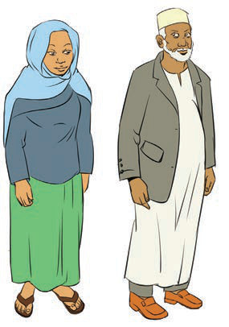
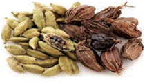
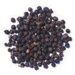
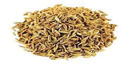

kama gunia, dunia, pesa na gari yamekopwa kutoka katika lugha ya Kihindi. Haya ni baadhi tu ya maeneo tunayotumia katika lugha ya Kiswahili kwa sasa. Lugha ya Kiswahili ni urithi nchini.
Pia, jamii zilizoshirikiana na wafanyabiashara hao zimerithi tamaduni za kigeni kama vile dini ya Kiislamu, mavazi na maadili yao. Jamii hizi ni zile zilizopo hasa katika maeneo ya mwambao wa Pwani ya Bahari ya Hindi. Kielelezo namba 11 kinaonesha mfano wa mitindo ya mavazi hayo. Maadili haya ya kigeni yamekuwa sehemu ya urithi wa jamii zetu mpaka sasa.

Aidha, ujio wa wageni hao ulileta viungo mbalimbali vya chakula nchini kama vile mdalasini, iliki, pilipili manga, karafuu na binzari nyembamba kama inavyoonekana katika Kielelezo namba 12.



